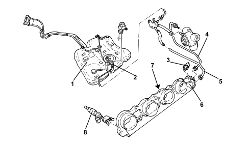
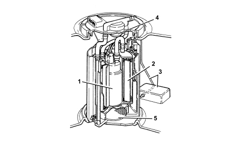
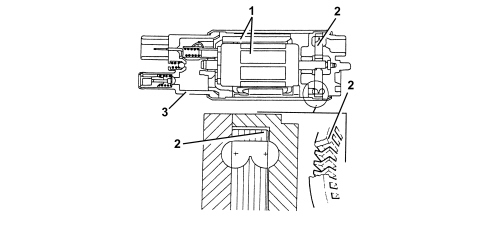

INTRODUCTION - FUEL TANK AND PIPES
- Path
- Descriptions > 10 ENGINE > 1040 FUEL TANK AND PIPES > INTRODUCTION - FUEL TANK AND PIPES
- Kind
- system description
- Applies to
- engines: 2.2 JTS; all production periods
- Interactive page
- https://sloeber94.github.io/elrnDB-aBrrSpdr/en/#/946001179
Applies to: engines: 2.2 JTS; all production periods
SPECIFICATIONS
The fuel system is divided into a low pressure circuit and a high pressure circuit.
The low pressure circuit consists of:
- submerged auxiliary pump complete with fuel level gauge, pressure regulator and fuel filter.
The high pressure circuit consists of:
- pressure pump;
- high pressure pipe (to be replaced at every dismantling);
- distribution manifold (rail) with pressure regulator and fuel pressure sensor;
- injectors.
The pressure regulator integrated in the fuel pump assembly is set at 3.5 bar.
With the key inserted the pressure throughout the low pressure line and the high pressure line is 3.5 bar and the pressure regulator is closed in these conditions.
The pressure in the distribution manifold (rail) is about 4.5 bar during starting because the high pressure pump is not capable of instantly providing high pressure.
The pressure in the rail can reach a maximum of 100 bar during operation depending on the engine load conditions and the performance requested by the driver.
When the engine is switched off, the pressure in the rail gradually decreases (vai the high pressure pump) until it reaches around 4.5 (pressure regulator setting).
The maximum pressure produced by the high pressure pump is around 120 bar (if the pressure regulator is stuck).
The system is equiped with an inertia switch that cuts off the fuel supply from the fuel pump if the vehicle crashes.
The fuel pipes are fastened to the underbody by means of special support bands with special protection.

1. Fuel tank
2. Submerged fuel pump
3. Fuel pressure sensor
4. High pressure pipe
5. Low pressure pipe
6. Pressure regulator
7. Fuel distribution manifold
8. Injectors
Fuel supply system
SUBMERGED PUMP ASSEMBLY COMPLETE WITH LEVEL GAUGE
This consists essentially of:
- an electric fuel pump (1)
- a fuel filter (2)
- a float level level gauge (3)
- a diaphragm pressure regulator (4) (calibrated at 4.5 bar)
- a mesh prefilter (5).
An O-ring ensures the seal between the pump cover and the tank.

Fuel pump
The fuel pump is equipped with a permanent magnet electric motor (1) that controls the pump (2) and a terminal mount cover (3) that contains the electrical and hydraulic connections.
The pump stage is single, peripheral flow type with high performance under low voltage and temperature conditions.
The advantages compared to pumps that operate on volumetric princples are as follows:
- reduced weight
- limited size.

INERTIA SWITCH
The inertia switch, fitted under the driver's seat on the right side, cuts off the fuel pump earth connection if the vehicle crashes and thus cuts off the fuel flow to the injection system.

A steel ball (1) fitted in a tapered housing (2) is normally held in place by the attractive force of an adjacent magnet.
Under specific acceleration loads, the ball is released from the magnetic detent and gradually emerges from the tapered mount. Its upward movement is dependent on cone angle.
A rapid release mechanism (3) over the ball forms a normally closed (NC) electrical circuit.
When struck by the ball, the mechanism changes position from a NC circuit to a normally open (NA) circuit and breaks the fuel pump earth circuit.
The switch may be reset by pressing a button protected by a flexible cover (4).